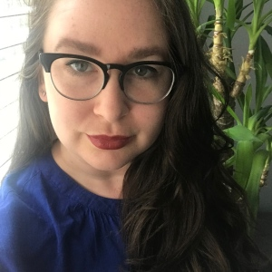

Horgan-Puppet Talks About White Privilege
November 14th, 2020
This story is from about a month ago, but I forgot to write it up. I still think it's useful for understanding these people, so here it is.
CTV:
TDC_ARTICLE_START
VANCOUVER -- The leader of B.C.'s New Democrats is apologizing for an answer he gave during the only televised debate of the 2020 provincial election.
The leaders of three major parties – all of whom are white – were asked during the debate Tuesday about white privilege.
John Horgan's response at the time was to outline a childhood that included playing sports and attending classes with a diverse group of people.
TDC_ARTICLE_STOP
This is both anti-white and sort of hilarious. Wow bro, you played sports with brown people. Wow, I’ve never done that. I’m just filled with so much irrational hatred for brown people that I spasm into a rage at the thought of passing one the puck.

I've played sports with brown people
But again, White Privilege is just an anti-white conspiracy theory. What’s more interesting is that the Donor-Center candidate, Andrew Wilkinson, also didn’t push back on this, he just said “I’ve delivered brown babies.” The point of not pushing back is to normalize this attack on White People.

I've delivered brown babies
TDC_ARTICLE_START
At one point, he said he doesn't "see colour," a response which drew criticism from many who see the often-used phrase as minimizing the challenges racism presents.
After the debate, Horgan apologized for the language he chose.
"This is the answer I wish I gave on stage," he wrote on Twitter, posting a video of a redo of his answer.
He described his comments as a mischaracterization and as inappropriate.
"Saying 'I don't see colour' causes pain and makes people feel unseen. I'm sorry," he wrote.
"I'll never fully understand, as a white person, the lived reality of systemic racism. I'm listening, learning, and I'll keep working every day to do better."
Many reacted with positive messages, but others were critical of his apology
One person wrote, "It always amazes me when white people claim they have no clue what challenges people of colour face every day when in fact they created this system."
Others said the video Horgan posted with his tweet had been edited. He'd taken out part of his answer, which was given during a Q&A portion after the debate, where he mentioned he grew up with friends who were Indigenous and South Asian, and that he grew up in poverty and knows what it's like to be part of "the crowd that nobody paid attention to."
TDC_ARTICLE_STOP
Sort of a weird place for this article to stop. It’s author, Kendra Mangione, really showing why she’s a fourth string propagandist, stuck with covering irrelevant BC Provincial Elections. Maybe one day she can move up in the world and start covering National Puppet Elections for Canada. Maybe one day, if she sucks the right cocks, she can move all the way up in the world to covering US National Puppet Elections.
Although with a face like that...
As far as the actual content of what Horgan says, look I’m sorry if you’re angry, but I just can’t take this shit seriously. This is the guy who once said,
TDC_ARTICLE_START
If you were woke, you would know that prop rep is lit.
TDC_ARTICLE_STOP
… a statement that he meant not as an ironic commentary on 60 year olds pretending to be teenagers, but as a serious statement designed to make teenagers think he’s cool like them.
Maybe one day he can start wearing his hat backwards, and break all the rules.
 More seriously, this is where the Donors want the debate happening here in BC, and it’s encouraging to hear this from Donor-Left Puppet, because it is so offputting to normal White People, that we will begin to look for an alternative.
More seriously, this is where the Donors want the debate happening here in BC, and it’s encouraging to hear this from Donor-Left Puppet, because it is so offputting to normal White People, that we will begin to look for an alternative.

More seriously, this is where the Donors want the debate happening here in BC, and it’s encouraging to hear this from Donor-Left Puppet, because it is so offputting to normal White People, that we will begin to look for an alternative.